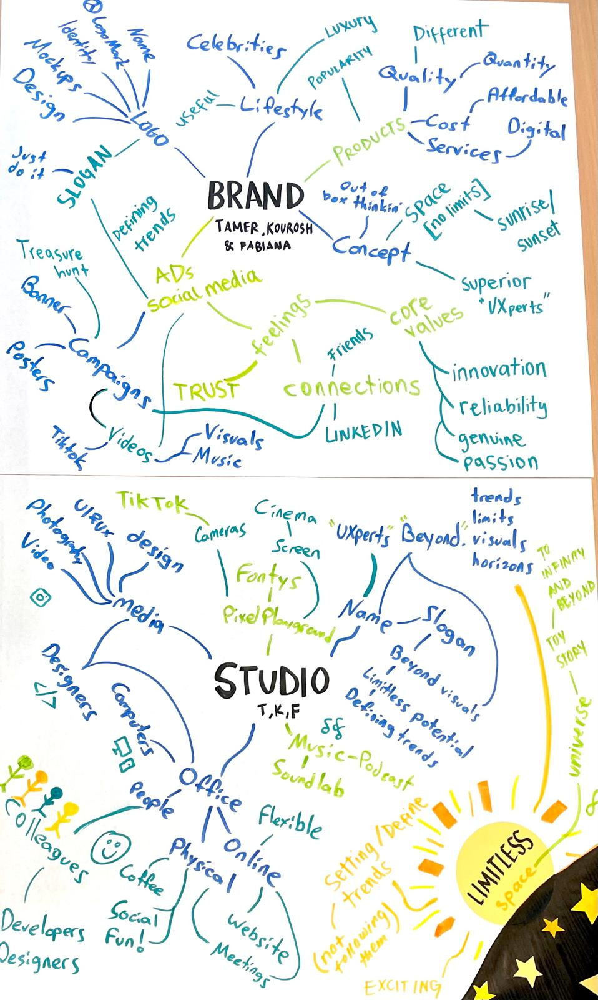
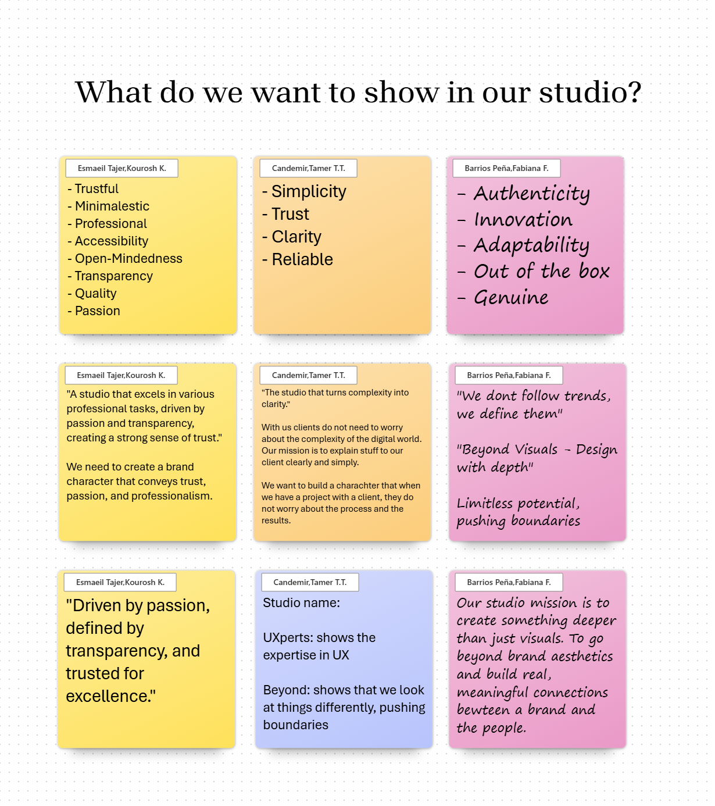
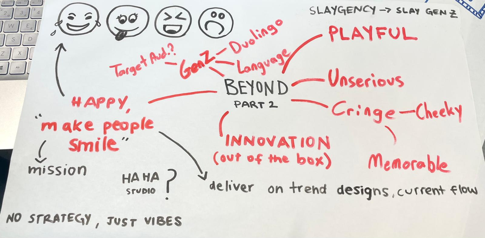
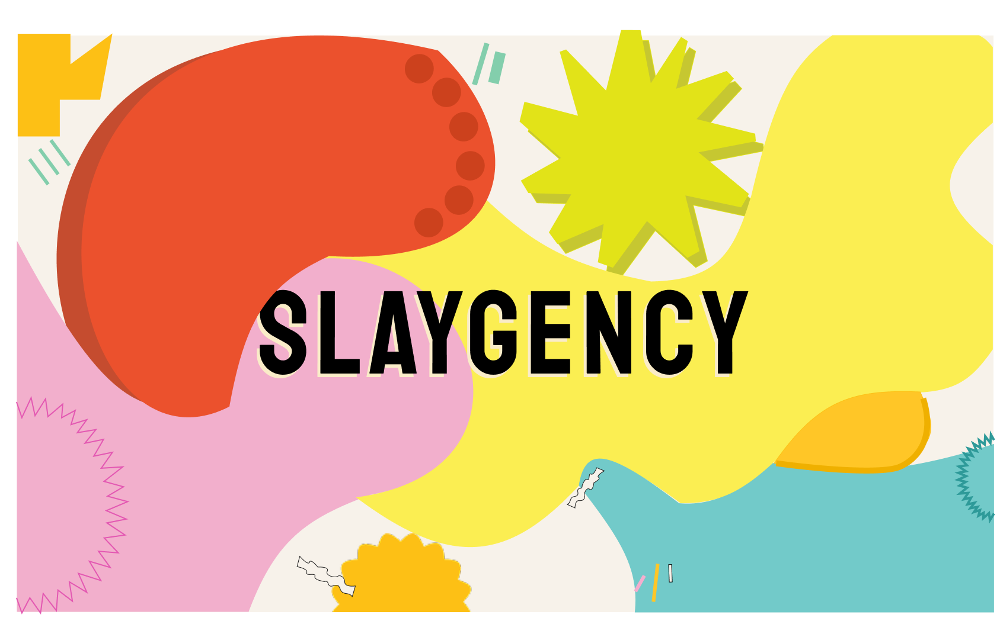
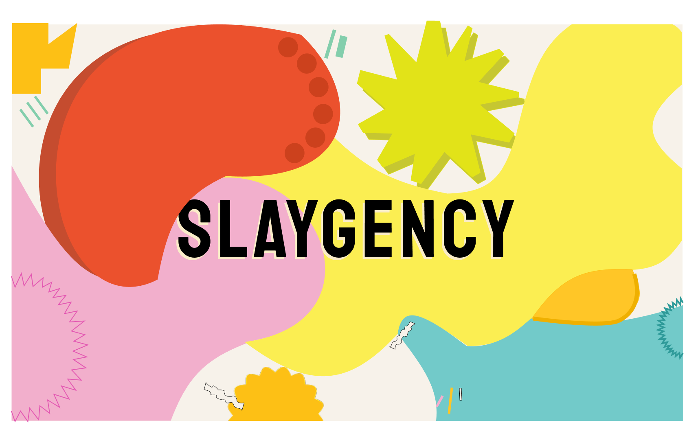

Studio Creation Process
We brainstormed ideas of what things compose a brand, based on that, we specified concepts to create our own studio.
 Inspiration
We had a HCD workshop where we identified problems people face when eating chips and came up with possible (some already existing) solutions. I made this concept map with the ideas my group and I discussed to represent it in a more visual way. This activity is loosely aligned with the double diamond method as we followed this framework in a small scale. This activity influenced the re branding of our studio from Beyond to Slaygency. Through empathy mapping and more brainstorming, we realized we wanted a brand that’s bold, fun, and unapologetically us.
I made a mind map with our new ideas for the new studio identity.

We wanted our studio name to align with its mission, create something deeper than just visuals, to go beyond brand aesthetics and build real, meaningful connections between a brand and the people. For that, all group members unanimously agreed on the name “Beyond”, as it aligns with our brands main core values : innovation, trust, quality, and reliability. I sketched my initial ideas of possible logo options. I later tested variations in color, size, and shape to find a balance between clarity, professionalism, and creativity.

Feedback
Several teachers expressed their opinions of lack of identity of our studio, it was boring and bland, even though we met all the requirements. As a group, we decided to re-brand and create something bold and unforgettable.
I made a new moodboard and we collectively chose several elements from .
 

I was playing it safe with the first designs. Keeping it basic to fit a wider range of possible clients. As a group we soon realized to stand out we have to put ourselves out there and really just be ourselfs. During this phase of the project we´ve had several presentations to all our semester mates to show our progress during the weeks, even though at the beginning i dreaded it, it helped me be more confident to show my work in front of other people. Re-branding from Beyond to Slaygency helped that confidence as the branding was truly something i felt proud to show and i think everyone also could feel that through my presentation. This project also helped me work on decision making within a group, we dialogued and worked together to find a middle ground whenever we didn't agree on something.